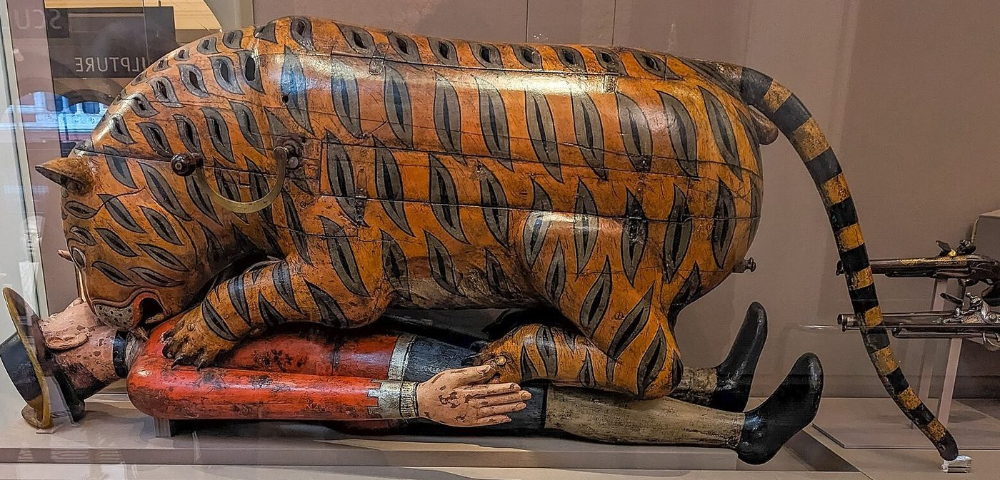

Chapter 18: Drill, Guns and Treasure: Regular Armies of the Indian States, c. 1740–1849¶
18.1 Introduction¶
In the century between the Carnatic wars and the annexation of Punjab, almost every Indian state of any size tried to build an army of a new kind: infantry battalions armed with flintlocks and bayonets, drilled to manoeuvre and fire together, supported by field artillery of standard calibres and paid every month. Chapter 9 has described how the lesson was learned in the Carnatic in the 1740s (Section 9.24) and has noted the debate about an Indian “military revolution” (Section 9.25); Chapter 5 has described the foundries and arsenals (Section 5.16), and Chapter 13 the new discipline of drill (Section 13.10). This chapter looks at the armies themselves, state by state: who built them, who led them, how they were paid, how well they fought, and why most of them were finally defeated or absorbed by the East India Company.
The older view, still common in popular writing, was that Indian rulers failed to modernise, or modernised only superficially, and that their armies collapsed before the disciplined troops of the Company. Recent historians have overturned this picture. Randolf Cooper’s study of the Anglo-Maratha campaigns argues that the Maratha infantry and artillery of 1803 were among the most formidable opponents the British faced anywhere, and that the Company won by controlling the “military economy” of credit, cattle and grain rather than by superior fighting (Cooper 2003). Pradeep Barua and Kaushik Roy have surveyed the adoption of European methods by Indian states and concluded that the transfer was rapid and in many respects successful (Barua 2005; Roy 2011). The question is no longer why Indian states could not build modern armies, but why armies that were in many ways a match for the Company’s could not save the states that built them.
18.2 What Made an Army Regular¶
The words used at the time show what was new. Indian rulers spoke of “regular” troops in contrast to the older “irregular” forces; the Sikh kingdom called them the fauj-i-āʾīn, the army of rules, as against the fauj-i-be-qawāʿid, the army without regulations. A regular army had five features. Its infantry was organised in permanent battalions (palṭan, a word usually traced to the English “battalion”, though “platoon” has also been proposed) and its cavalry in regiments (risāla), with a fixed establishment of officers and men. Its soldiers wore uniform and carried standard weapons supplied by the state. They were trained in drill, which made it possible to manoeuvre large bodies of men under fire and to deliver volleys. They were paid monthly in cash, directly or through their officers, rather than through the revenue assignments of their commanders. And they were supported by artillery organised in batteries, with trained gunners, draught animals and ammunition supplies.
The vocabulary of the new armies travelled with them. Ranks borrowed from English and French appeared in Indian languages: kumedān for commandant, ajūṭan for adjutant, karnail and jarnail for colonel and general in the Sikh army; words of command were given in English or, in some units, French. The red or blue coat, the cross-belt and the drum became familiar in courts from Lahore to Srirangapatna. These borrowings are sometimes taken as signs of mere imitation. In fact they marked the adoption of a complete system, whose parts depended on one another: drill needed permanent units, permanent units needed regular pay, and regular pay needed a reliable flow of cash.
That last requirement was the hardest to meet. A cavalry army of the older type could be paid by assigning the revenue of districts to its commanders, who collected it themselves and paid their men when they could (Chapter 17). An infantry battalion could not wait. Its men had no horses to sell and no lands to fall back on, and if they were unpaid they would desert or mutiny. Every Indian state that built a regular army therefore faced a fiscal problem, and the way each state solved it — or failed to solve it — shaped its fate.
18.3 Officers from Abroad¶
Most Indian states hired European officers to raise and train their regular troops. The first wave came from the French: officers and soldiers left without employment when French power in India collapsed after the fall of Pondicherry in 1761, and adventurers who came out in the following decades. The second wave, after 1815, consisted largely of veterans of Napoleon’s armies, for whom peace in Europe meant unemployment. Alongside them served Britons, Irishmen, Germans, Italians and Americans, and a growing number of Eurasians born in India. Herbert Compton’s account of the “military adventurers of Hindustan”, published in 1892 and based on the memoirs and records available to him, remains the starting point for their biographies (Compton 1892). Table 18.1 lists some of the best known.
| Officer | Origin | Employer | Service and fate |
|---|---|---|---|
| Michel Raymond | France | Nizam of Hyderabad | Raised the Nizam’s French-officered corps from the 1780s; died 1798; corps disbanded the same year |
| Benoît de Boigne | Savoy | Mahādjī Shinde | Raised the Shinde brigades from 1784; retired 1795; later settled at Chambéry |
| Pierre Cuillier-Perron | France | Shinde | Commanded the brigades after de Boigne; left Shinde’s service in 1803 |
| Anthony Pohlmann | Hanover | Shinde | Commanded Shinde’s infantry at Assaye, 1803 |
| George Thomas | Ireland | Begum Samrū; Maratha chiefs | Built a short-lived principality at Hansi; defeated by Shinde’s brigades, 1801–02 |
| Jean-François Allard | France | Ranjit Singh | Arrived 1822; raised the cavalry of the Fauj-i-Khāṣ; died at Peshawar, 1839 |
| Jean-Baptiste Ventura | Italy | Ranjit Singh | Arrived 1822; commanded the infantry of the Fauj-i-Khāṣ |
| Claude-Auguste Court | France | Ranjit Singh | From 1827; artillery and foundry work |
| Paolo Avitabile | Italy | Ranjit Singh | From 1827; governor of Wazirabad and later of Peshawar |
The value of these men lay less in battlefield command than in organisation: they knew how to raise, train, equip and administer a battalion, and how to establish a foundry or an arsenal. Their weakness was loyalty. They served for pay, and most had no stake in the survival of their employer’s state. The danger became plain in 1803. When war with the Company began, the Governor-General Richard Wellesley issued a proclamation calling on British subjects in Maratha service to leave it, with the promise of pensions; many British and Eurasian officers did so, and Perron himself left Shinde’s service and passed into Company territory early in the campaign. Not all deserted — Pohlmann commanded at Assaye — but the Maratha brigades entered the war with gaps in their command at every level (Cooper 2003; Compton 1892). The lesson was not lost on Ranjit Singh. As the usual terms are reported in the secondary literature, he bound them by written undertakings to serve him faithfully, even in a war with a European power and if need be against their own countrymen, required them to wear beards and to abstain from beef and tobacco, and encouraged them to marry and settle in the Punjab (Lafont 2002).
It is easy to exaggerate the role of these Europeans. They were few — a few dozen at most in any one army — and the soldiers, the junior officers and most of the gunners and craftsmen were Indian. Indian commanders such as Ilāhī Bakhsh, who led the Sikh artillery, or the Maratha officers of the Shinde brigades, learned the new methods and commanded with them. By the 1830s the Sikh regular army was largely officered by Punjabis.
18.4 Bengal and Awadh after Plassey¶
The first Indian rulers to attempt a regular army in direct response to the Company were the nawabs of the east, who had seen its effects at close quarters. Mīr Qāsim, whom the Company made Nawab of Bengal in 1760, moved his capital from Murshidabad up the Ganges to Monghyr in Bihar, further from Calcutta, and set about building an army that could stand against the Company’s sepoys. He raised infantry battalions drilled in the European manner, under an Armenian commander, Gurgīn Khān, and a number of European adventurers, among them the German Walter Reinhardt, known as Sombre, later the husband of Begum Samrū (Section 16.9); and he established workshops at Monghyr that made flintlock muskets and cast guns, whose quality British observers acknowledged. He also tried to put his finances in order, which brought him into conflict with the Company’s servants, who were trading in Bengal free of the duties that Indian merchants paid.
War broke out in 1763. Mīr Qāsim’s new army was defeated in a series of engagements in Bengal, at Katwa, Giria and Udhua Nala, and retreated into Bihar; Gurgīn Khān was murdered in his own camp, and at Patna Reinhardt, on the Nawab’s orders, killed the British prisoners held there. Mīr Qāsim fled to Awadh, and his forces joined those of the Nawab of Awadh and the Mughal emperor in the campaign that ended at Buxar in 1764 (Section 19.3). The experiment had lasted barely three years. It showed that battalions could be raised and equipped quickly, but also that a few years of drill could not create the cohesion, the officers and the confidence of a long-established force.
Shujāʿ al-Daula of Awadh (r. 1754–1775), defeated at Buxar, kept his throne by the treaty of Allahabad in 1765 and spent the following decade rebuilding his army at his new capital of Faizabad. He raised battalions of regular infantry, enlarged his artillery and employed French officers, among them Jean-Baptiste Gentil, alongside Gosāīn and Afghan contingents (Section 17.8). The Company watched this growth with suspicion, and a treaty of 1768 limited the size of the Nawab’s forces. With these troops, and a Company brigade, Shujāʿ al-Daula conquered Rohilkhand in 1774 (Section 17.4). After his death the Company pressed his successors to reduce their own armies and to pay for Company troops instead, the pattern that Wellesley later made general (Section 18.7).
18.5 Mysore under Haidar and Tipu¶
Haidar ʿAlī (c. 1720–1782) learned the value of European methods early. As a commander in the service of the Mysore state in the 1750s, stationed at Dindigul, he set up an arsenal with the help of French specialists and began to train infantry on the European model. After he took power in 1761 he built an army that combined the fast-moving cavalry traditional in the Deccan with growing numbers of disciplined infantry and a powerful artillery. In the First Anglo-Mysore War his cavalry ravaged the country around Madras, and in 1769 he dictated terms almost at its gates. In the Second, in September 1780, his army and that of his son Tipu surrounded and destroyed a Company column under William Baillie at Pollilur, near Kanchipuram, as it marched to join the main army; under the fire of the Mysore guns and rockets the column’s ammunition carts exploded and its square broke, and Baillie and the survivors were taken prisoner to Srirangapatna. It was one of the heaviest defeats the Company suffered in India (Figure 19.2).
Tipu Sultan (r. 1782–1799) carried the reform further. He organised his infantry into brigades (kushūn), each with its own artillery; gave his officers Persian titles of his own devising; issued detailed regulations for the army, of which a Persian manual, the Fatḥ al-Mujāhidīn, compiled at his order by his secretary Zayn al-ʿĀbidīn Shūshtarī and usually dated 1783, is the best known; and kept close personal control of appointments, supplies and discipline, as his surviving letters show (Kirkpatrick 1811). Srirangapatna became a centre of arms production, with foundries for guns, workshops for muskets and the iron-cased rockets that made Mysore famous (Section 5.18). Tipu sent embassies to the Ottoman sultan and to Louis XVI of France in the later 1780s, and corresponded with the French Republic, seeking officers, craftsmen and an alliance against the British.
The tiger was the emblem of this army. Tiger stripes (babrī) decorated uniforms, weapons and cannon, tiger heads formed the finials of his throne, and the mechanical organ known as “Tipu’s Tiger”, which shows a tiger mauling a European soldier and is now in the Victoria and Albert Museum in London (Figure 18.1), became the most famous object taken from Srirangapatna. Kate Brittlebank has shown that Tipu’s use of the tiger, and of a range of Islamic and local Hindu symbols, was part of a deliberate effort to establish the legitimacy of a new dynasty in a kingdom whose old ruling house he had displaced (Brittlebank 1997).


The Mysore army fought well, but its state was outmatched. In the Third Anglo-Mysore War (1790–92) the Company, under the Governor-General Lord Cornwallis in person, allied with the Marathas and the Nizam, took Bangalore and advanced on Srirangapatna; Tipu made peace in 1792 by surrendering half his territory, paying a large indemnity and handing over two of his sons as hostages. In 1799 the Company, now free of the French threat in Hyderabad (Section 18.7), invaded again and stormed Srirangapatna, where Tipu was killed. His army had been reduced by the loss of territory and revenue in 1792; his search for French help had given Wellesley the pretext he sought; and his neighbours had joined his enemies. The fate of Mysore illustrates the general point of this chapter: an army could be modern and still be defeated by the diplomacy and finance of a stronger state.
18.6 The Maratha Brigades¶
The Marathas’ first experience of regular infantry came a generation before the Shinde brigades. Ibrāhīm Khān Gārdī, a Muslim commander who had learned the new methods in the French service in the Deccan under the Marquis de Bussy — the name gārdī is usually derived from the French garde — served the Nizam and then, from about 1760, the Peshwa, bringing with him battalions of musketeers and a train of artillery. At the third battle of Pānīpat in January 1761 his battalions, on the Maratha left, attacked the Rohilla contingent of the Afghan army and inflicted heavy losses before the collapse of the Maratha centre decided the day; he was captured and put to death after the battle (Gordon 1993). Gommans has pointed out that the Afghan victory owed much to its own mixture of heavy cavalry, camel-mounted swivel guns and an efficient supply system, which kept the Afghan army fed while the Maratha camp starved (Gommans 1995). Pānīpat thus showed both the promise of regular infantry and its dependence on the army around it.
The most powerful regular army built by an Indian state in the eighteenth century was that of the Shinde (Scindia) family of Gwalior. Mahādjī Shinde (d. 1794), who had survived the third battle of Pānīpat and rebuilt Maratha power in the north, engaged Benoît de Boigne in 1784 to raise two battalions of regular infantry. The force grew over the following decade into several brigades, each of infantry battalions with artillery and some cavalry, known in the Persianised military vocabulary of the north as kampū, a word usually derived from the Portuguese campo (“camp”), though a borrowing from the English “camp” or “company” has also been suggested (Compton 1892).
The brigades proved themselves in the wars of the north. At Lalsot in 1787, when Mahādjī’s army faced the combined forces of the Rajput kingdoms of Jaipur and Jodhpur and many of his own Mughal troops went over to the enemy, de Boigne’s battalions held their ground, though Mahādjī was forced to withdraw. In 1790 the brigades won decisive victories at Patan and Merta in Rajasthan against the Mughal noble Ismāʿīl Beg and the Rathors of Jodhpur, and in 1793 at Lakheri they defeated the army of the rival Maratha house of Holkar, whose own regular battalions were commanded by the French officer Dudrenec. These battles established the Shinde brigades as the strongest force in north India and made Mahādjī the protector of the Mughal emperor in Delhi.
The brigades were paid in an unusual way. Instead of drawing on the Maratha treasury, they were assigned the revenue of a block of districts in the Ganges–Yamuna Doab around Aligarh (a jaidād, or assignment for the support of troops), which de Boigne and later Perron administered directly. Pay was therefore regular, and the brigades were well equipped. But the arrangement turned the commander into a territorial ruler with his own revenues, fort and court at Aligarh, and his own interests. To the British, Perron’s position looked like the beginning of a French state in Hindustan, and this fear was one of the reasons Wellesley gave for war in 1803.
The campaign of 1803 showed both the quality of the brigades and the weakness of their political foundations. In the north, Gerard Lake stormed the fort of Aligarh, the brigades’ headquarters, on 4 September and defeated the remaining northern forces near Delhi and at Laswari; in the Deccan, Arthur Wellesley defeated Shinde and the Bhosale ruler of Nagpur at Assaye and Argaon (Section 19.4). British officers who fought at Assaye and Laswari wrote of the steadiness of the Maratha infantry and the accuracy of their gunners, and the casualty lists bear them out. Cooper argues that the brigades lost not because they fought badly but because the Company had already bought, through its proclamation and its agents, much of their officer corps; because their commanders could not agree on a common plan; and because the Company’s control of credit, grain and draught cattle in the Deccan allowed its armies to move and fight while the Marathas could not concentrate (Cooper 2003).
Yashwantrāv Holkar, who had stood aside in 1803, fought the Company in 1804–05 and showed what a mixed army of cavalry and regular infantry could still achieve. In 1804 his forces drove a Company column under Colonel Monson into a disastrous retreat through central India, and in early 1805 Lake’s army failed in four assaults on the mud fortress of Bharatpur, defended by its Jat ruler in alliance with Holkar (Section 9.18). The Company made peace with Holkar on relatively generous terms.
The last Maratha armies took the field in 1817–18, when the Peshwa Bājīrāv II, the Bhosale ruler of Nagpur and the Holkar court rose, separately and without a common plan, against the Company during its campaign against the Pindārīs (Section 17.9). The Peshwa’s army was defeated at Khadki outside Pune in November 1817 (Section 19.4). At Sitabuldi, outside Nagpur, later the same month, the Bhosale’s troops, among whom Arab soldiers fought with particular determination, attacked the Company’s small force on the hill above the Residency and were driven off only after two days of fighting. At Mahidpur in December 1817 the Holkar army, whose artillery was served with great skill, was defeated after a hard battle. The Peshwa’s best commander, Bāpū Gokhale, was killed in a cavalry action at Ashti in February 1818, and the Peshwa surrendered in June. The fortress of Asirgarh, whose garrison held out into 1819, was the last Maratha stronghold to fall. These battles show that the Maratha courts still commanded brave and skilful soldiers; what they lacked after 1803 was the money, the allies and the political unity to use them together.
The Shinde army survived the defeat of 1803 in reduced form. In December 1843, after a succession dispute at Gwalior, a Company army fought the Gwalior troops at Maharajpur and Panniar on the same day, 29 December, and defeated them after hard fighting. The Gwalior army was then reduced, and a “Gwalior Contingent” under British officers, paid by the state, was raised in its place; in 1857 that contingent joined the rising (Section 17.11).
18.7 Hyderabad, Awadh and the Subsidiary System¶
In Hyderabad the Nizam built his regular infantry around the French corps raised by Michel Raymond from the 1780s. By the 1790s it was the largest and best-trained part of the Nizam’s army, with its own arsenal and foundry, and it gave Hyderabad an independent military capacity that the Company regarded as a threat, the more so because its officers were French at a time when Britain and France were at war. Raymond died in 1798. In the same year the new Governor-General, Richard Wellesley, concluded a treaty with the Nizam under which the Company enlarged the force it stationed in Hyderabad and the French corps was disbanded; Company troops surrounded the corps’ camp, and its officers were sent to Europe as prisoners.
The treaty was an example of the subsidiary alliance, which Wellesley turned into the principal instrument of Company expansion. Its terms were broadly the same everywhere. The Indian ruler accepted a permanent force of Company troops in his territory and paid for it, first in cash and, when he could not pay, by ceding territory; he dismissed Europeans of other nations from his service; and he conducted his foreign relations through the Company. In 1800 the Nizam ceded the districts south of the Tungabhadra that became known as the Ceded Districts to pay for his subsidiary force. In 1801 the Nawab of Awadh, under pressure, ceded about half of his kingdom, including Rohilkhand and the lower Doab, to meet the cost of the Company troops stationed there, and agreed to reduce his own army. The Peshwa accepted a subsidiary alliance in 1802, the event that led to the war of 1803.
The subsidiary system was a means of disarmament as well as of expansion. It transferred the military power of Indian states to Company battalions paid with Indian money, and it required those states to cut their own forces. In Hyderabad, a further force, raised from 1813 under British officers and paid by the Nizam, became the Hyderabad Contingent; its cost led in 1853 to the assignment of the revenues of Berar to the Company. The soldiers dismissed from the armies of subsidiary states did not disappear. They joined the Pindārī bands, the armies of states still independent, or the turbulent retinues of local chiefs (Section 17.9), and the problem of the “unemployed soldiery” became one of the Company’s arguments for further annexation.
The burden of the subsidy could provoke armed resistance. Travancore, whose army had been reformed by Mārtāṇḍa Varma (Section 9.21), accepted a subsidiary treaty in 1805. The payments it required fell heavily on a state already burdened by debt, and the Company pressed for the reduction of Travancore’s own troops, whose allowances had already been cut. In 1808 the Dalawa (chief minister) Vēlu Tampi, who had himself negotiated the treaty, rose against the Company together with the minister of Cochin. His forces attacked the British Resident’s house at Cochin, and in January 1809 he issued a proclamation at Kundara calling on the people to resist. Company troops defeated the Travancore forces within a few months, and Vēlu Tampi took his own life to avoid capture; the British exposed his body in public. Travancore’s army was then largely disbanded, leaving only a small Nāyar brigade, and the state remained a subsidiary ally until 1947. In neighbouring Malabar, Kēraḷa Varma, the Pazhassi Rājā, had already fought a long forest war against the Company from the hills of Wayanad until his death in 1805; together, the two risings marked the end of independent armed power in Kerala.
18.8 The Army of the Sikh Kingdom¶
Ranjit Singh (r. 1799–1839) inherited an army of misl cavalry, brave and mobile but loyal to its own chiefs (Section 9.20). From the first decade of the nineteenth century he began to build regular infantry on the Company’s model. His first drill instructors were deserters from the Company’s sepoy regiments, and his early battalions were recruited largely from Purbiyas, Gurkhas and Punjabi Muslims, because Sikh horsemen at first regarded fighting on foot as beneath them. Over the following decades, helped by regular pay and by the prestige of the new battalions, Sikhs came to form the majority of the infantry (Grewal 1990; Bajwa 1964). The Nepali word lāhure, later applied to Gurkhas in British and Indian service, is usually derived from the name of Lahore, where Nepali soldiers served in Ranjit Singh’s army.
The arrival of the French and Italian officers Allard and Ventura in 1822, and of Court and Avitabile a few years later, gave the regular army its most famous unit, the Fauj-i-Khāṣ or “special army”, a brigade of infantry, cavalry and artillery trained on French lines, carrying its own standards and said to have used French words of command (Lafont 2002). Its officers’ careers have attracted much attention, but the army’s development was directed by the Maharaja himself, who attended parades, inspected recruits and horses, and followed the details of pay and equipment closely. The administrative records of the Lahore court, which survive in large numbers and were catalogued in the early twentieth century by Sita Ram Kohli, include muster rolls, pay accounts and orders that allow historians to reconstruct the army’s growth in unusual detail; Fauja Singh Bajwa’s study of the military system is based on them (Bajwa 1964). Beside the regular army the kingdom kept the irregular horse (ghoṛcaṛhā) of the Sikh landed families and the old misl contingents (Section 17.4), and the Akālīs, who acknowledged no commander but the Panth (Section 15.9); its soldiers included Hindus, Muslims and Gurkhas as well as Sikhs.
The artillery was the arm that most impressed the army’s opponents. The Lahore foundries cast guns of several calibres (Section 5.16), and the artillery was organised in batteries of foot, horse and camel guns. Its commander for much of the period, Ilāhī Bakhsh, was a Punjabi Muslim who had risen in the Maharaja’s service. In the Anglo-Sikh wars the Sikh gunners served their guns to the last at Ferozeshah and Sobraon (Section 19.4).
The regular army made possible the expansion of the kingdom beyond the plains of Punjab. Multan was taken in 1818 after a hard siege, Kashmir in 1819, and the trans-Indus territories in a series of campaigns against Afghan and tribal forces. At Nowshera in 1823 the Sikh army defeated a large Afghan and tribal force, in a battle in which the irregular Akālīs fought beside the new battalions (Section 15.9). Peshawar was annexed in 1834, and in 1837 the Sikh commander Harī Siṅgh Nalwā was killed defending the new fort at Jamrud at the mouth of the Khyber Pass against an Afghan attack. The north-western frontier that the British inherited in 1849 was, in large part, the frontier the Sikh army had won.
The regular army’s dependence on regular pay was its weakness after Ranjit Singh’s death. As the court at Lahore fell into a sequence of murders and short reigns, pay fell into arrears and the regiments formed elected committees (pañc) that negotiated with, and soon dominated, the court. The crossing of the Sutlej in December 1845, which began the First Anglo-Sikh War, owed something to the wish of court factions to turn an army they could neither pay nor control against the British. The army that fought at Ferozeshah, Sobraon and Chillianwala was as good as any the Company had faced; it was let down by commanders, some of whom were in contact with the enemy, and by a state that had lost its centre.
18.9 Armies of the Himalaya¶
Two mountain states built regular armies in this period and used them in campaigns that took Indian soldiers into the high Himalaya and Tibet: the Gorkha kingdom of Nepal and the Dogra state of Jammu.
18.9.1 The Gorkha state¶
Pṛthvī Nārāyaṇ Śāh (r. 1743–1775), king of the small hill state of Gorkha, spent a quarter of a century conquering the Kathmandu valley, whose three Newar kingdoms fell in 1768–69. An expedition sent by the East India Company in 1767 to help the king of Kathmandu was turned back in the foothills. Pṛthvī Nārāyaṇ’s army was organised in companies on the Company’s model, with firearms, uniforms and drill, recruited from the hill peoples of his kingdom — Khas, Magar, Gurung and others — and paid by assignments of land. His advice to his successors, preserved as the Divya Upadeśa, describes the kingdom as a yam between two boulders, China and the Company, and recommends caution in dealing with both (Stiller 1973).
His successors carried Gorkha arms west along the Himalaya, taking Kumaon in 1790 and Garhwal in 1804 and besieging the Kangra fort of the Katoch ruler Saṃsār Cand from 1806 until Ranjit Singh’s intervention forced them back across the Sutlej in 1809. To the north, a dispute with Tibet over trade and coinage led to wars in 1788–92. After Gorkha troops plundered the monastery of Tashilhunpo at Shigatse in 1791, the Qing emperor sent an army that advanced across the Himalaya to within a short distance of Kathmandu in 1792; Nepal made peace and agreed to send missions to Beijing every five years.
18.9.2 The Anglo-Nepal war¶
Expansion along the foothills brought Nepal into conflict with the Company, and the war of 1814–16 was one of the hardest the Company fought in India (Pemble 1971). The Gorkha forces held stockaded hill forts in difficult terrain. At Kalunga (Nalapani), near Dehra Dun, a small garrison under Balbhadra Kũvar repulsed two assaults in October and November 1814 — the Company’s general, Rollo Gillespie, was killed in the first — before abandoning the fort; the British later erected two memorials on the site, one to their own dead and one in tribute to their opponents. In the west, David Ochterlony manoeuvred the veteran commander Amar Siṅgh Thāpā out of a chain of ridge-top forts around Malaun, and Amar Siṅgh surrendered in May 1815. A treaty was signed at Sugauli in December 1815; when the Nepalese court hesitated to ratify it, Ochterlony advanced towards the Kathmandu valley in 1816, and Nepal accepted the treaty, ceding Kumaon, Garhwal and much of the Tarai.
The war had a long sequel. Even before it ended, the Company began to enlist Gorkha soldiers taken prisoner or released after the surrender at Malaun, forming the first battalions of what became the Gurkha regiments of the Indian and British armies (Section 19.5). In Nepal, the minister Bhīmsen Thāpā, who dominated the court from 1806 to 1837, maintained and enlarged the army after the defeat; it remained the basis of the state’s power and, through the “Gurkha” connection, a source of employment for hill men in foreign service that continues today. In 1857–58 Jaṅg Bahādur Rāṇā, who had seized power in Nepal in 1846, led a Nepalese army to help the British recover Awadh, and was rewarded with the return of part of the western Tarai lost at Sugauli.
18.9.3 The Dogras in Ladakh and Tibet¶
The Dogra Rajput Gulāb Siṅgh, made Raja of Jammu by Ranjit Singh in 1822, built a state of his own on the northern edge of the Sikh kingdom. His general Zorāwar Siṅgh led a series of campaigns that are among the most remarkable in Indian military history. Between 1834 and 1840 his small armies crossed the high passes from Kishtwar into Ladakh, defeated the Ladakhi forces and brought the kingdom under Dogra control; in 1840 he conquered Baltistan, taking the fort of Skardu. In 1841 he invaded western Tibet, taking Rudok and Gartok and advancing to Taklakot near Lake Mānasarovar. As winter set in, his army, far from its bases and short of supplies, was attacked by Tibetan forces reinforced from Lhasa; Zorāwar Siṅgh was killed in battle in December 1841, and most of his army died in the fighting or of cold. Tibetan forces then advanced into Ladakh, but were driven back, and a treaty agreed at Chushul in 1842 restored the old frontier and the trade between Ladakh and Tibet (Datta 1973).
These campaigns were fought at altitudes of four thousand metres and more, in conditions that tested every arm. Supplies were carried by porters and pack animals over passes closed for months by snow; firearms and artillery had to be light enough to carry; and cold killed more men than battle. The Dogra soldiers were recruited from the hill peoples of Jammu and the neighbouring states, and their officers combined the methods of the Sikh regular army with long experience of mountain warfare. After the First Anglo-Sikh War, by the Treaty of Amritsar of 1846, the British recognised Gulāb Siṅgh as ruler of Jammu and Kashmir in return for a payment of seventy-five lakh rupees, and the Dogra army became the army of the princely state of Jammu and Kashmir.
18.10 Camps That Became Cities¶
Regular armies needed permanent quarters, and their camps left a lasting mark on the map of India. The older armies had lived in moving camps (Section 9.6); a regular battalion, with its parade ground, magazine, hospital, lines for the men and their families, and bazaar, was better kept in one place. The clearest Indian example is Gwalior. In 1810 Daulatrāv Shinde fixed his permanent camp below the fort of Gwalior, and the settlement that grew up around it is still called Lashkar, from the Persian word for an army or camp; it became the capital of the Shinde state and the core of the modern city.
The Company’s own cantonments, laid out in the decades after 1760, became the largest of these military towns: Barrackpore near Calcutta, Kanpur and Meerut in the Ganges plain, Secunderabad beside Hyderabad, where the subsidiary force was stationed from the early 1800s and which was named after the Nizam Sikandar Jāh, and Bangalore in Mysore. Each had its grid of barracks and bungalows, its parade ground, and a sadar bāzār that supplied the troops and soon housed a population of traders, artisans, servants and soldiers’ families many times larger than the garrison. Douglas Peers has described the colonial state of this period as a “garrison state” (Section 19.3); the cantonments were its physical form. Mhow in central India, founded by John Malcolm after the battle of Mahidpur in 1818 and later the birthplace of B. R. Ambedkar, is a typical example. The popular explanation of its name as an acronym for “Military Headquarters of War” is a modern invention; the name belonged to the village beside which the cantonment was built.
The Sikh kingdom too kept its regular army in fixed cantonments around Lahore, and the British, after annexing the Punjab, built their own at Mian Mir nearby. The cantonments of the regular armies, Indian and British, thus formed a new kind of settlement, at once military camp, market town and enclave of a distinctive mixed society, and many of them remain military stations today.
18.11 An Army of the Older Kind: Sindh, 1843¶
Not every state built a regular army, and the fate of one that did not shows by contrast what the new armies offered. Sindh was ruled from the 1780s by the Talpur Mīrs, a Baluch family that had overthrown the previous dynasty, the Kalhoras. The Mīrs divided the country among branches of the family at Hyderabad, Khairpur and Mirpur, and their military power rested on the Baluch tribes settled in Sindh, whose chiefs brought out their followers when called. These were brave and well-armed fighters, with matchlocks, swords and shields, supported by some artillery, but they had no permanent units, no drill and no regular pay.
The Company forced treaties on the Mīrs in 1838–39 to secure the passage of its armies to Afghanistan, and in 1843 its commander in Sindh, Charles Napier, provoked a war that ended in annexation. At Miani, on 17 February 1843, Napier’s small army of British and Bombay sepoy troops attacked a much larger Baluch force drawn up behind the high bank of a dry river bed. The Baluch fought hand to hand with sword and shield for several hours and suffered very heavy losses before they broke; a second battle at Dubba, near Hyderabad, in March completed the conquest. The story that Napier announced his victory with the one-word Latin pun peccavi (“I have sinned”, that is, “I have Sindh”) is a joke first published in the London magazine Punch, not a message he sent. The annexation was criticised at the time, even in Britain, as an unprovoked aggression; militarily, Miani showed how far the gap had opened between an army of the older kind and a regular force with drilled infantry and field artillery.
18.12 Paying for Regular Armies¶
The histories reviewed in this chapter all turn, in the end, on money. Regular infantry and artillery were more effective than the cavalry armies they replaced, but they were also more expensive, and their costs had to be met every month. Historians call the resulting competition among eighteenth-century states, each forced to extract more revenue to pay for larger and costlier armies, “military fiscalism” (Roy 2011); it drew rulers into dependence on bankers and revenue farmers, and armies whose pay fell into arrears mutinied, plundered or deserted (Sections 9.26 and 17.6). Indian states met these costs in different ways, each with its own risks.
The Shinde solution, the assignment of a block of territory to the commander of the brigades, secured regular pay at the cost of creating a semi-independent power within the state. Mysore under Tipu centralised revenue collection, took over trade in valuable commodities and kept tight control of expenditure, which gave the state a strong army but made enemies among the landholders and merchants whose income it squeezed. The Sikh kingdom paid its army from the revenues of a rich province and the tribute of its dependencies, and did so successfully while Ranjit Singh lived; after his death the arrears that accumulated turned the army into a political force. Hyderabad and Awadh, under subsidiary alliances, paid for an army that was not their own.
The Company was the most successful practitioner of military fiscalism, and its advantages went beyond the revenues of Bengal. It could borrow in India and in London at lower rates than any Indian ruler; Indian bankers increasingly preferred it as a debtor, because it was more likely to pay; and its commissariat could buy grain and hire draught cattle, often through the same Banjārā carriers who supplied Indian armies (Section 6.9), on a scale and with a reliability that its opponents could not match. Cooper’s phrase for what was at stake, the “military economy” of South Asia, captures the point: the wars of 1790–1849 were contests for control of the credit, animals, grain and soldiers of the subcontinent, and the Company won that contest before it won the battles (Cooper 2003).
18.13 Assessment¶
The regular armies of the Indian states were not failures. Within two generations Indian rulers raised infantry and artillery that destroyed a Company force at Pollilur, repulsed it at Bharatpur, made it pay heavily for its victories at Assaye, Laswari, Ferozeshah and Chillianwala, and won wars against other Indian powers and in the Himalaya. They adopted European methods selectively and quickly, as Indian armies had earlier adopted the horse-archer and the gun, and Indian soldiers, gunners and officers learned to use them well.
What the regular army changed was the relationship between the soldier and the state. The older armies of the labour market could be raised quickly and dissolved cheaply; the new ones were permanent, expensive and dependent on a steady flow of cash. They strengthened the states that could pay for them and endangered those that could not. They made Indian rulers dependent on foreign officers whose loyalty was conditional, and they offered the Company, through the subsidiary system, a means of taking control of Indian armies without fighting them. When the Company finally prevailed, it did not abolish the regular armies of India but took them over: the Gurkha battalions, the Sikh regiments raised after 1849, the Hyderabad and Gwalior contingents and the forces of the princely states became parts of the colonial military order described in Chapter 19.
Further Reading¶
-
Cooper (2003): the Maratha armies and the war of 1803, with a reassessment of their quality.
-
Barua (2005) and Roy (2011): surveys of military change in South Asia.
-
Compton (1892): the European officers in Indian service.
-
Brittlebank (1997): Tipu Sultan’s kingship and its symbols.
-
Bajwa (1964) and Lafont (2002): the army of the Sikh kingdom.
-
Pemble (1971), Stiller (1973) and Datta (1973): the Gorkha state, the Anglo-Nepal war and the Dogra campaigns.